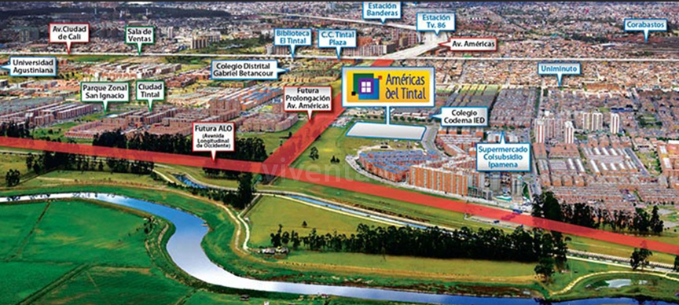

Presentacion
Me llamo Jhon Kevin Arredondo Vanegas y este es mi blog sobre la inclusion digital para la practica de responsabilidad social
Comunidad social

Para esta practica de responsabilidad social se trabajara con mis padres para esta inclusion digital
Ubicacion
La comunidad se encuentra ubicada en la ciudad de Bogota, en la localidad de kennedy en el barrio ciudad tintal
Modalidad

Para una experiencia mas enriquecesora y aprovechable, la modalidad de trabajo que se manejara sera de precencial